복제는 두 가닥 모두 주형, 전사는 한 가닥만 주형. 어느 가닥이 주형인지는 유전자마다 다름 (프로모터 방향이 결정).
코돈 64개 = 61개 아미노산 + 3개 종결코돈(stop: UAA, UAG, UGA) / AUG = Met + 개시코돈(start)
★ 유전암호는 중복적이지만 모호하지 않음(redundant but not ambiguous): GGU·GGC·GGA·GGG → 모두 Gly / 한 코돈은 한 아미노산만. 거의 보편적(universal).
★ 코돈은 올바른 판독틀(reading frame)로: 겹치지 않고 3개씩. UCUCUC → UCU·CUC(Ser-Leu) / 한 칸 밀리면 Leu-Ser. 판독틀은 AUG가 결정.
★코돈표를 만든 과정(필기): 반복 염기서열 mRNA를 합성(UUUU…, CCCC…, UCUCUC…) → 번역에 필요한 효소와 재료가 든 배지에 넣음 → 합성된 아미노산 확인 (예: UUUU… → Phe만 연결된 polypeptide → UUU = Phe).
★서열 표기 관례(필기): DNA 서열을 한 줄만 주면 비주형 가닥을 준 것 (mRNA와 같은 서열). 코돈은 mRNA 5′→3′, 3자 암호(주형 가닥)는 3′→5′로 씀. 예) 주형 3′-GGC-5′ ↔ 코돈 5′-CCG-3′.
PPT 코돈표
서열 문제 푸는 법
주형 가닥을 주면 방향(3′→5′)을 먼저 맞추고 상보적으로 바꾼다 / 비주형 가닥이면 T만 U로. → AUG부터 3개씩 끊고 종결코돈에서 멈춘다 (종결코돈은 아미노산 개수에 X).
예) mRNA 5′-GC AUG GCC UUU CAA UAA GC-3′ → Met–Ala–Phe–Gln (앞뒤 GC = UTR, 번역 X)
17.2 전사: DNA 지시에 따른 RNA 합성 Transcription
전사에 참여하는 분자 Molecular components
용어
내용
RNA 중합효소RNA polymerase
DNA 두 가닥을 벌리고 RNA를 5′→3′ 방향으로 합성 / ★프라이머 불필요(no primer)
프로모터promoter
RNA 중합효소가 결합해 전사를 시작하는 DNA 서열, 개시점의 상류(upstream)
종결자terminator
원핵세포의 전사 종결 신호 (RNA 암호화 부위에 포함되어 전사됨)
전사 단위transcription unit
★ PPT 정의: Promoter + RNA-coding region + Terminator (terminator는 RNA-coding region에 포함되어 전사됨) ※ 캠벨 본문은 "promoter 하류의 전사되는 부위"로 정의 — 시험은 선생님 정의로
+1 / −1
+1 = 전사된 첫 뉴클레오타이드(개시점), −1 = 바로 상류 (0번 없음)
원핵세포
진핵세포
RNA 중합효소
1종류로 모든 RNA
★Pol Ⅰ → rRNA, Pol Ⅱ → mRNA, Pol Ⅲ → tRNA (필기 강조)
프로모터 결합
★σ 인자(sigma factor) + core 효소 = holoenzyme → 프로모터(−10 TATAAT, −35)에 직접 결합 ★ σ는 promoter 인식을 돕고 elongation 단계에서 이탈(필기)
직접 결합 X → 전사인자가 먼저 TATA box에 결합
종결
종결자 서열 (ρ 비의존 / ρ 의존)
AAUAAA 전사 후 하류에서 절단
전사의 3단계: 개시 → 신장 → 종결 Initiation · Elongation · Termination
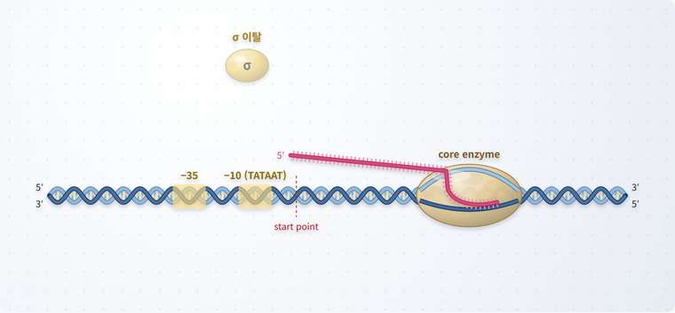
원핵 개시
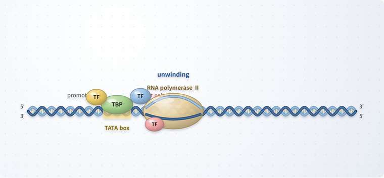
진핵 개시
★ 개시: 진핵세포의 RNA 중합효소 결합 Initiation
전사인자(transcription factors) = RNA 중합효소의 결합과 전사 개시를 매개하는 단백질.
TATA box = 진핵 핵심 프로모터, 개시점 상류 약 25 nt. 전사인자 TBP(TATA-binding protein)가 인식 (필기).
★ TATA box 서열(TATAAAA)은 비주형 가닥 기준으로 쓴 것 — 실제로 결합하는 상보 가닥은 ATATTTT (필기). 진핵은 결합이 약해 RNA pol 혼자 전사 개시 X → 전사 개시 복합체 도움.
RNA pol 자체가 helicase 활성을 가져 스스로 DNA를 풂 (필기).
전사 개시 복합체(transcription initiation complex) = 프로모터에 결합한 전사인자 + RNA 중합효소 Ⅱ.
신장 Elongation of the RNA strand
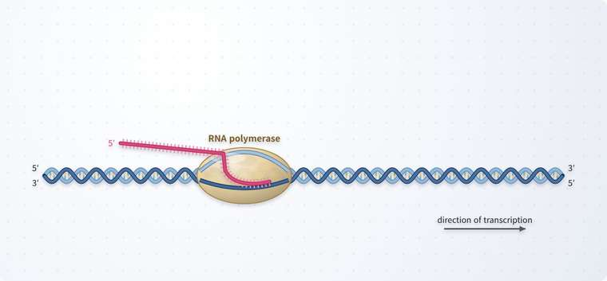
신장
하나의 유전자를 여러 RNA 중합효소가 동시에 전사 가능 → 짧은 시간에 많은 RNA.
★ 종결 — 세균과 진핵세포가 다름 Termination
세균: 종결된 전사물을 변형 없이 바로 mRNA로 사용.
진핵: Pol Ⅱ가 아데닐산중합반응 신호(polyadenylation signal)를 전사 → pre-mRNA의 AAUAAA → 10~35 nt 하류에서 절단 → 중합효소는 조금 더 전사하다가 떨어짐 ★ 절단 후 아직 전사 중인 남은 RNA의 5′ 끝을 exonuclease가 팩맨처럼 먹어 들어감 → RNA pol Ⅱ를 따라잡으면 pol이 DNA에서 떨어짐 → 종결 (필기).
자주 틀리는 것
진핵 RNA pol Ⅱ는 프로모터에 직접 결합 ✗ → 전사인자 먼저 / RNA 중합효소는 프라이머 필요 ✗ / ρ 비의존성 종결 = 머리핀 + U 연속 둘 다
17.3 진핵세포는 전사 후 RNA를 변형한다 RNA processing
RNA 가공 = 핵 안의 효소가 pre-mRNA를 세포질로 내보내기 전에 변형. ★ 3가지: 5′ 캡 씌우기(capping) · 꼬리 붙이기(tailing) · 골라 잇기(splicing)
★ mRNA 양 끝의 변형 Alteration of mRNA ends
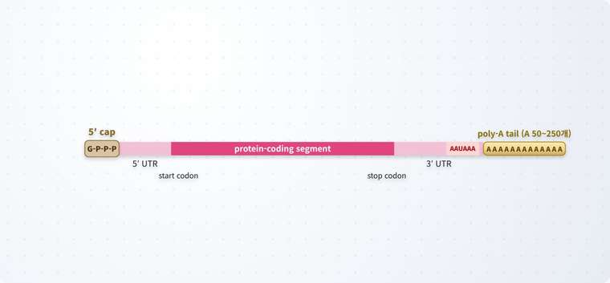
5′ cap · poly-A tail
5′ 캡 5′ cap
폴리A 꼬리 poly-A tail
구조
변형된 구아닌 (G-P-P-P, 5′-5′ 결합) = G-cap
아데닌 50~250개
시기
5′ 말단 20~40 nt 전사 직후
AAUAAA 하류에서 절단된 뒤
참고
리보솜 결합 위치 표시
꼬리 길이 ↔ mRNA 수명 ↔ 단백질 양
AAUAAA는 꼬리 자체가 아니라 "꼬리를 붙여라" 신호 / UTR도 엑손이다"보호"만 쓰면 감점 → 기능 3가지 모두 쓰기
분할 유전자와 RNA 스플라이싱 Split genes and RNA splicing
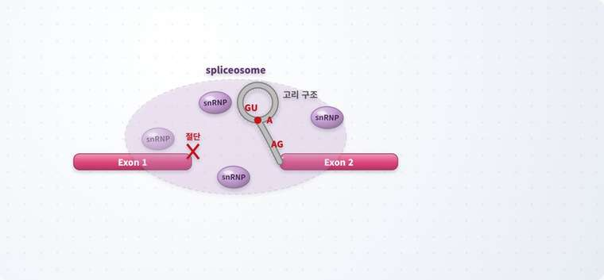
splicing
인트론(intron) = 잘려 나가는 비암호화 부위 / 엑손(exon) = 아미노산 서열로 번역·발현되는 부위 (mRNA에 남음). 두 용어는 RNA와 DNA 서열 모두에 씀.
★snRNA + 단백질 → snRNP → 여러 snRNP + 단백질 → 스플라이싱 복합체(spliceosome): 스플라이싱 자리 (splice site)를 인식.
★ 인트론 서열: 5′-GU ‥‥ A ‥‥ AG-3′ (필기). 인트론은 올가미 모양으로 잘려 나가 분해됨.
★ 리보자임 Ribozymes
리보자임 = 효소 역할을 하는 촉매성 RNA (예: snRNA, 스스로 스플라이싱하는 인트론, 리보솜의 rRNA).
RNA가 효소로 작용할 수 있는 3가지 특성: ① 스스로 염기쌍을 이뤄 3차원 구조 형성 ② 일부 염기가 촉매에 참여하는 작용기 보유 ③ 다른 핵산과 수소결합 → 기질 인식(특이성)
인트론의 기능적·진화적 중요성 Importance of introns
★선택적 RNA 스플라이싱(alternative RNA splicing): 1 유전자 → 2종 이상의 폴리펩타이드 (사람 다중 엑손 유전자 약 95%).
단백질은 도메인(domain)으로 된 모듈 구조 / 각 엑손이 서로 다른 도메인을 코딩하는 경우가 많음 → 엑손 뒤섞기(exon shuffling)로 새 단백질 진화.
17.4 번역: RNA 지시에 따른 폴리펩타이드 합성 Translation
tRNA의 구조와 기능 Transfer RNA
각 tRNA는 mRNA 코돈을 특정 아미노산으로 번역 / 3′ 끝(CCA)의 A에 아미노산의 C말단(카복실기)이 결합 ★(필기: 아미노산은 N말단·C말단을 가짐) / 반대쪽 고리 = 안티코돈 (mRNA 코돈과 상보 결합).
★ 아미노아실-tRNA 합성효소 Aminoacyl-tRNA synthetase
★ 동요 Wobble
동요는 코돈 셋째(3′) = 안티코돈 첫째(5′) 자리에서만안티코돈은 3′→5′로 쓰므로 맨 오른쪽 글자가 5′ 염기임에 주의!
★ 리보솜의 구조와 기능 Ribosomes
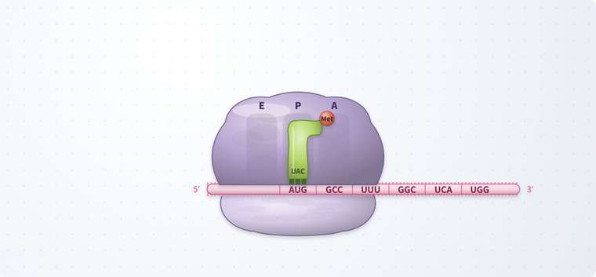
리보솜 E·P·A
리보솜 = 대단위체 (large subunit, LSU) + 소단위체 (small subunit, SSU), 각각 단백질 + rRNA(Pol Ⅰ이 전사, 진핵은 인에서 조립).
원핵 70S (50S: 23S·5S rRNA / 30S: 16S rRNA — ★ 개시 때 샤인-달가노 서열 인식, 돌연변이 시 치명적 → 잘 보존되어 서로 다른 종을 구분할 때 사용(필기)) · 진핵 80S (60S: 28S·5.8S·5S / 40S: 18S).
단백질 구조(필기): 1차 = polypeptide의 아미노산 서열 / 2차 = α나선, β병풍 (수소결합) / 3차 = R기 상호작용으로 접힌 입체 구조 / 4차 = 3차 구조 polypeptide 2개 이상 결합 (예: 헤모글로빈)
합성 중 1차 구조에 따라 스스로 접혀 2·3차 구조 형성 (protein folding) → 번역 후 변형 (post-translational modifications): 당·지질·인산기 첨가, 일부 아미노산 제거, 4차 구조.
자유 리보솜(free ribosomes): 세포질 기능 단백질 / 부착 리보솜(bound ribosomes): 내막계·막·분비 단백질. 두 리보솜은 같은 것 → 오갈 수 있음.
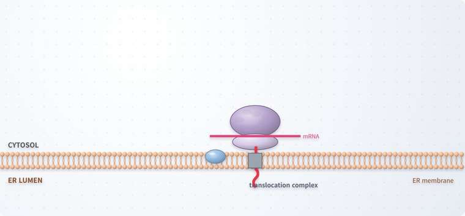
SRP 경로
신호 펩타이드(signal peptide) = N 말단 약 20 aa / SRP(signal-recognition particle)가 인식 → ER 막 수용체로 안내. 신호 펩타이드를 없앤 유전자 → 단백질이 세포질에 남음.
★ Polypeptide 합성은 cytosol에서 시작하고, 특별한 신호가 없으면 cytosol에서 종료 (PPT).
SRP 6단계: ① 합성 시작 ② SRP가 signal peptide 결합 ③ SRP가 SRP receptor protein에 결합 ④ SRP 분리, 합성 재개 (translocation complex 통로로 ER lumen에 들어감) ⑤ signal-cleaving enzyme이 signal peptide 절단 ⑥ 완성된 polypeptide가 최종 구조로 접힘
17.5 뉴클레오타이드 돌연변이는 단백질 구조와 기능에 영향을 준다 Mutations
돌연변이(mutation) = 세포의 유전정보 변화 / 점돌연변이(point mutation) = 한 유전자의 뉴클레오타이드쌍 하나 변화 → 비정상 단백질.
소규모 돌연변이 2종류: 뉴클레오타이드쌍 치환(substitution) / 삽입·결실(insertion · deletion)
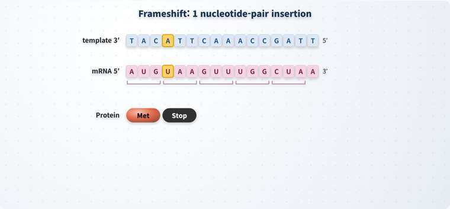
nonsense 예
종류
변화
결과
침묵 silent
같은 aa 코돈으로 치환 (주로 셋째 염기)
영향 거의 없음 (중복성)
과오 missense
다른 aa 코돈으로 치환
위치에 따라 영향 다름 (겸형 적혈구)
정지 nonsense
aa 코돈 → 종결코돈
짧은 단백질 → 대부분 기능 X
틀이동 frameshift
3의 배수가 아닌 삽입·결실
뒤쪽 판독틀이 모두 바뀜 → 치환보다 치명적
돌연변이유발원(mutagens): 자외선(타이민 이합체), X선, 염기 유사물 등 화학 물질.
유전자·유전체 편집 Editing genes and genomes
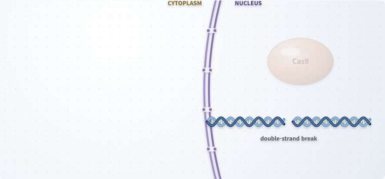
CRISPR-Cas9
유전자란 무엇인가? What is a gene?
유전의 개별 단위 → 염색체의 특정 뉴클레오타이드 서열 → 특정 폴리펩타이드를 암호화하는 DNA → 최종 정의: 폴리펩타이드 또는 RNA 분자 같은 기능적 산물을 만들기 위해 발현되는 DNA 영역
18.1 세균은 전사를 조절하여 환경 변화에 반응한다 Bacteria respond by regulating transcription
세균의 유전자 발현 조절 과정 중 하나 = operon model.
대사 경로 조절 2가지: 효소 활성 조절(최종 산물 tryptophan이 첫 효소를 억제 = feedback inhibition, 빠름) / 효소 생산 조절(유전자 발현 조절, 느리지만 장기적).
Operon의 구성
구성 요소
설명
promoter(프로모터)
RNA polymerase가 결합. ★(필기) promoter 하나에 structural gene 여러 개 가능
operator(작동자)
★ repressor(억제 단백질)가 결합하는 DNA 부위 → operator에 붙어서 발현을 억제. promoter 안 또는 promoter와 유전자 사이
structural gene(구조 유전자)
기능적으로 연관된 gene cluster → 단일 "on-off switch"로 함께 조절, 하나의 mRNA로 전사
regulatory gene(조절 유전자)
★ operon에 포함 X · 여기서 repressor가 만들어짐 (자기 promoter를 가짐)
repressor(억제자)
operator에 결합해 RNA polymerase의 전사를 막는 단백질 (allosteric: 활성/불활성 두 모양)
corepressor(보조억제자)
★ corepressor가 repressor에 결합해야 repressor가 작용하는 경우도 있음 (예: tryptophan)
★ Repressible and Inducible Operons Two Types of Negative Gene Regulation
Negative 음성 조절 조절 단백질 = repressor(억제자)
Positive 양성 조절 조절 단백질 = activator(활성자)
Repressible 억제성 operon 평소 켜져 있음 · 억제성 물질 관여 · 동화
trp operon
자연계에서 발견되지 X
Inducible 유도성 operon 평소 꺼져 있음 · 유도성 물질 관여 · 이화
lac operon (allolactose)
lac operon (cAMP) ← activator: CRP
★ repressor 는 operator 에 붙어 발현을 막고, activator(CRP)는 promoter 상류에 붙어 발현을 활성화 · repressor ↔ activator
★ trp operon — 트립토판 오페론 / 동화의 역할 repressible
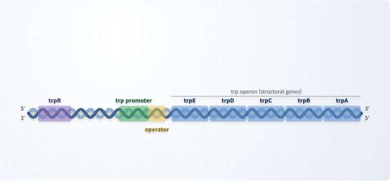
trp operon 구조
trpR(조절 유전자)가 만드는 trp repressor는 혼자서는 불활성 → 평소 operon on → tryptophan 합성 효소(trpE~trpA) 생산.
tryptophan이 쌓이면 ★ tryptophan이 repressor에 결합 = corepressor → repressor 활성 → operator에 결합 → No RNA made → tryptophan ↓ (음성 피드백).
★ 필기: 알로락토스 기준 음성 조절, cAMP 기준 양성 조절 · 젖당보다 포도당이 더 좋음.
★ 양성 조절 — cAMP와 CRP positive gene regulation
★ 필기: 포도당 X → 아데닐산 고리화 효소 활성화 → cAMP↑ → cAMP + CRP → CRP 활성화.
CRP = cAMP receptor protein = activator. 활성 CRP가 promoter 상류 CRP-binding site에 결합 → RNA polymerase 결합 촉진 → 전사↑.
lac operon이 많이 전사되려면 ★ ① lactose 존재 ② 포도당 농도 낮음 두 조건 모두 필요.
젖당
포도당
repressor
cAMP / CRP
lac mRNA
X
X 또는 O
활성 (operator 결합)
—
거의 없음
O
O
불활성
cAMP 적음, CRP 불활성
조금
O
X
불활성
cAMP 많음, CRP 활성
많음
18.2 진핵생물의 유전자 발현은 여러 단계에서 조절된다 Eukaryotic gene expression is regulated at many stages
유기체의 거의 모든 세포는 동일한 genome을 포함 (★ 필기 예외: 생식세포, 적혈구, 면역세포).
세포 유형 간 차이 = differential gene expression = 동일한 게놈을 가진 세포에서 서로 다른 유전자가 발현된 결과.
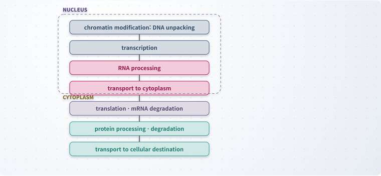
진핵생물 유전자 발현 조절 단계 — ★ 필기: 전사 조절 / 전사 후 조절 / 번역 조절 / 번역 후 조절
1. Regulation of Chromatin Structure 염색질 구조 조절
고도로 밀집된 heterochromatin 내의 유전자는 일반적으로 발현되지 않음.
histone과 chromatin의 DNA에 대한 화학적 변형 → 염색질 구조와 유전자 발현 모두에 영향.
변형
대상
결과
histone acetylation
histone tail의 아미노산에 acetyl group 부착
염색질 구조를 열어(탈응축) 전사 개시 촉진
histone methylation
histone
염색질 응축 → 전사 감소
DNA methylation
DNA의 특정 염기에 메틸기
일부 종에서 전사 감소 · 세포 분화에서 유전자의 장기적 불활성화
★ 필기 암기법DNA X · 히스톤 O acetylation : 촉진이 많음 / DNA O · 히스톤 O methylation : 억제가 많음
Epigenetic Inheritance 후성 유전
chromatin modification은 DNA 서열을 바꾸지 않지만 다음 세대 세포로 전달될 수 있음. epigenetic inheritance = 뉴클레오타이드 서열과 직접 관련되지 않는 메커니즘에 의해 전달되는 형질의 유전.
2. Regulation of Transcription Initiation 전사 개시 조절
진핵 유전자: 상류의 enhancer(distal control elements) — proximal control elements — promoter(TATA box) — exon/intron — poly-A signal sequence — transcription termination region.
General transcription factors(★ 보편 전사인자): RNA polymerase는 전사를 시작하려면 transcription factor의 도움 필요 · 모든 단백질 코딩 유전자의 전사에 필수 · 일부는 promoter 내 TATA box에 결합 · 많은 것들이 다른 전사인자·RNA polymerase Ⅱ를 포함한 단백질에 결합.
Specific transcription factors(★ 특수 전사인자): control element에 결합. proximal control elements는 promoter 가까이 / enhancer = distal control elements는 유전자에서 멀리 떨어져 있거나 intron에 위치할 수도 있음(★ 수천 nt 떨어져 있을 수도) · 각 enhancer는 일반적으로 하나의 유전자에만 연관. ★ 필기: enhancer는 하나 또는 여러 개의 조절 요소를 포함하는 부위 / 원거리 조절 요소, 근거리 조절 요소 / 특수 전사인자들이 enhancer에 붙으면 발현이 조절됨.
Activator: ★ enhancer에 결합하여 유전자 전사를 촉진하는 단백질 · 두 개의 domain(bind DNA, activates transcription).
Repressor: ★ silencer와 결합 · 특정 유전자의 발현을 억제하는 단백질. (★ enhancer ↔ silencer)
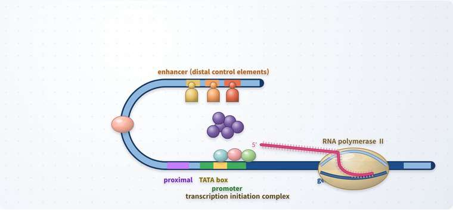
★ 필기: 전사 개시 단계, DNA가 DNA-bending protein에 의해 휘어짐 → activator·mediator proteins·general TF·RNA polymerase Ⅱ = transcription initiation complex
★ Combinatorial Control of Gene Activation (복습 표시)
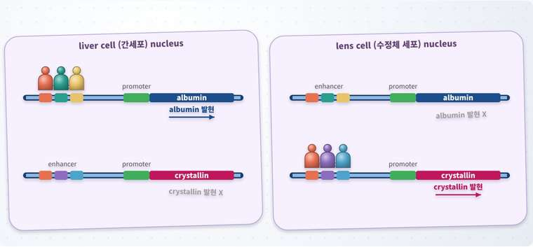
간세포(liver cell)와 수정체 세포(lens cell): DNA는 같지만 이용 가능한 activator의 조합이 달라 albumin / crystallin 유전자가 각각 발현
과거에는 단백질이나 기능성 RNA를 암호화하지 않는 유전자를 "junk DNA"로 간주 → 유전체의 상당 부분이 noncoding RNAs(ncRNA)로 전사 가능, ncRNA에는 다양한 생물학적 역할.
★ 필기: 대장균에 인슐린 유전자를 그대로 넣으면? → intron 제거 안 됨 (세균엔 splicing X).
★ Effects on mRNAs by MicroRNAs and Small Interfering RNAs
MicroRNA (miRNA)
Small interfering RNA (siRNA)
기원 (★ 필기)
자기 유전체 게놈 · 짧은 헤어핀을 형성하는 ssRNA
외인성 물질 · dsRNA
가공
★ 다이서(Dicer)가 잘라 짧은 RNA로 → 단백질과 복합체
작용
표적 mRNA와 염기쌍 → 완전히 상보적이면 mRNA 분해 / 덜 맞으면 번역 차단 = RNA interference (RNAi)
Chromatin Remodeling and Effects on Transcription by ncRNAs
일부 ncRNA는 chromatin structure의 재구조화를 유발.
일부 yeast에서 chromosome replication 후 centromere에서 siRNA가 heterochromatin을 재형성.
piwi-interacting RNAs (piRNAs) · Long noncoding RNAs (lncRNAs).
18.4 차등적 유전자 발현 프로그램이 다세포 생물의 여러 세포 유형을 만든다 A program of differential gene expression
Embryonic development 과정에서 fertilized egg는 다양한 종류의 세포를 생성 → 세포는 tissues, organs, organ systems, the whole organism으로 연속적으로 조직됨 → gene expression이 동물의 발달 과정을 조율.
Maternal effect genes: 자손 자체의 유전자형에 상관없이 어미의 유전자에 이상이 있을 때 자손에게 돌연변이 표현형을 일으키는 유전자 · 모체 난소에 존재하는 난자에 위치 · 수정 전에는 주로 mRNA 형태 · cytoplasmic determinant는 maternal effect gene의 산물 · 초파리 극성을 조절해 egg-polarity gene이라고도 함.
모계 효과 유전자 중 하나인 bicoid 유전자는 신체의 앞쪽 절반에 영향.
Morphogen gradient hypothesis: 형태형성물질(morphogen)이라 불리는 물질의 분포가 배아의 축과 여러 형태적 특성을 결정한다는 가설.
단원마다 핵심을 한 장으로 · 개념이나 가지를 누르면 그 문항의 정리(핵심 정리 · 외울 것 · 기작 단계 · 자주 틀리는 것)가 떠요